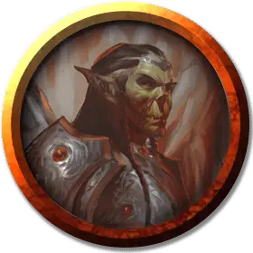

Ал’хайя
Al’chaia
Средний Гуманоид (Гит), законно-злой, именной НИП

Класс Доспеха 18 (латы)
Хиты 140 (25к8 + 28)
Скорость 30 футов
| мод | спас | ||
|---|---|---|---|
| СИЛ | 16 | +3 | +3 |
| ЛОВ | 14 | +2 | +2 |
| ТЕЛ | 15 | +2 | +5 |
| мод | спас | ||
|---|---|---|---|
| ИНТ | 14 | +2 | +5 |
| МДР | 14 | +2 | +5 |
| ХАР | 15 | +2 | +2 |
Чувства пассивное Восприятие 12
Языки Гитский
Опасность 8 (3900 опыта)
Бонус мастерства +3
Особенности
Врождённое колдовство (псионика). Базовой характеристикой Ал’хайи является Интеллект (Сл спасброска от заклинания 13, +5 к попаданию атаками заклинаниями). Он может накладывать следующие заклинания, не нуждаясь ни в каких компонентах:
• Неограниченно: волшебная рука [mage hand] (рука невидима)
• 3/день каждое: необнаружимость [nondetection] (только на себя), прыжок [jump], туманный шаг [misty step], языки [tongues]
Действия
Мультиатака. Ал’хайя совершает две атаки серебряным двуручным мечом.
Серебряный двуручный меч. Рукопашная атака оружием: +9 к попаданию, досягаемость 5 футов, одна цель. Попадание: Рубящий урон 13 (2к6 + 6) плюс урон психической энергией 10 (3к6). Это атака магическим оружием. При критическом попадании по цели, находящейся в астральном теле (как при использовании заклинания проекция в астрал), гитъянки может перерезать серебряную нить, соединяющую цель с материальным телом, вместо причинения урона.
Описание
Алхайя, стоит в центре комнаты за круглым столом диаметром 5 футов, изучая на нём отчеты на языке Гитов описывающие недавние столкновения с иллитидами на уровне 17.
См. дополнительно статью: "Бестиарий: Гиты"